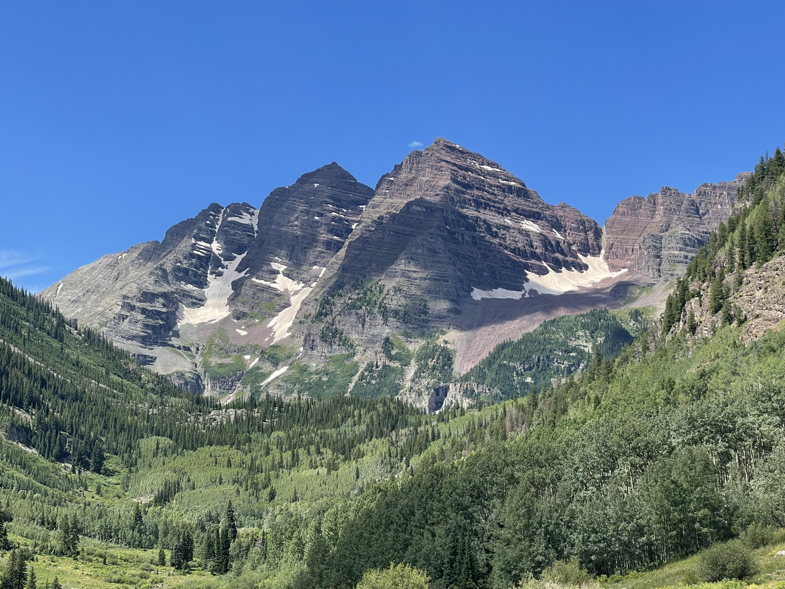
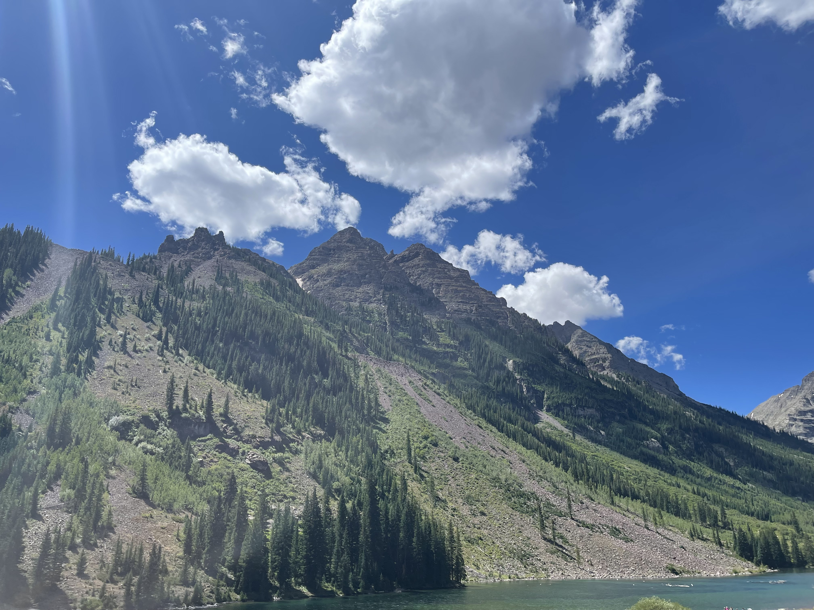

I explored Aspen's Maroon Bells, the most photographed mountains in North America. These iconic, bell-shaped peaks rise to 14,000 feet over the glacial Maroon Creek Valley, their striking wine-colored slopes creating some seriously breathtaking views.

